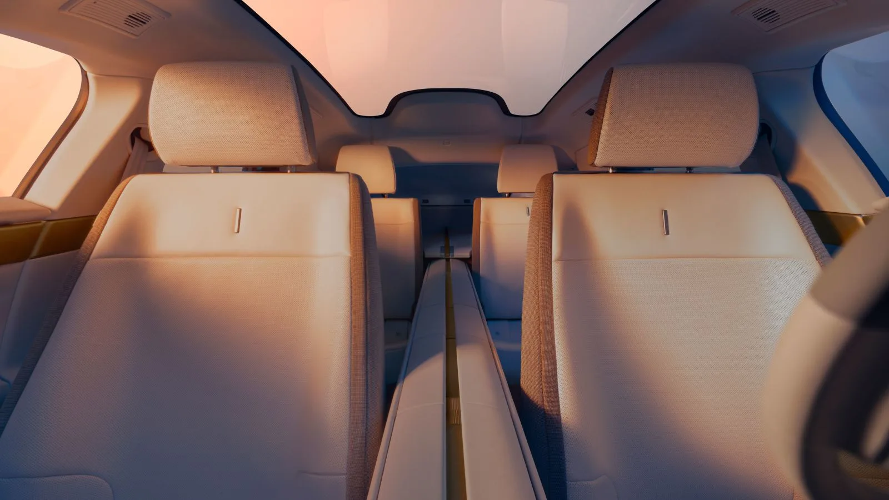
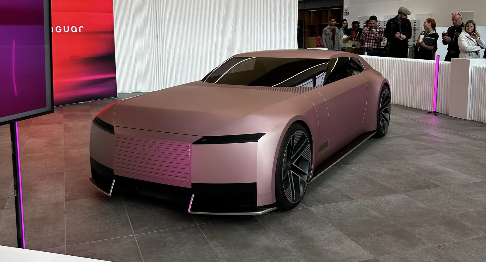
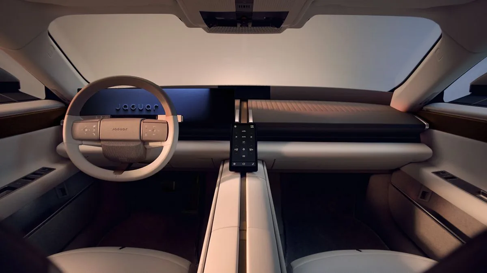

▲ 재규어 타입 01 실내. 스티어링 휠 너머로 보이는 계기판 외에는 대형 스크린을 최소화했다. 우측 상단은 위장랩을 두른 실차 이미지
재규어가 완전 전동화 브랜드로 거듭나기 위해 준비 중인 4도어 쿠페 '타입 01'의 실내를 최초 공개했습니다. 정식 공개는 오는 10월 6일 뉴욕에서 예정돼 있으며, 첫 고객 인도는 2027년 초로 계획돼 있습니다. 이번에 드러난 실내에서 가장 화제가 되는 것은 전 좌석을 관통하는 대형 '척추(central spine)' 구조물입니다. 재규어는 이를 "시그니처 아트피스"라고 표현했습니다.
1. 4석을 가르는 척추, 왜 이런 구조를 택했나
타입 01 실내를 가로지르는 척추 구조물은 앞좌석과 뒷좌석 사이를 길게 연결하며, 차량 전체를 4개의 독립된 구역으로 나눕니다. 각 구역에는 개별 좌석이 하나씩 배치돼, 전통적인 벤치형 뒷좌석이나 좌우 연결된 좌석 배치와는 완전히 다른 접근을 취했습니다. 이는 재규어가 타입 01을 대량 생산 패밀리카가 아니라, 4명의 탑승자 각자에게 독립적인 공간감을 제공하는 럭셔리 그랜드 투어러로 포지셔닝하고 있다는 것을 보여줍니다.

▲ 뒷좌석에서 바라본 타입 01 실내. 앞뒤를 관통하는 척추 구조물이 좌우 좌석을 완전히 분리하며 4개의 독립된 공간을 만든다
2. 스크린 대신 대리석 — 미니멀리즘의 재해석
가장 파격적인 결정은 스크린을 대폭 줄인 것입니다. 최근 대다수 프리미엄 전기차들이 거대한 파노라믹 디스플레이나 다중 스크린으로 실내를 채우는 것과 달리, 타입 01은 스티어링 휠 너머로 보이는 전통적인 계기판 위치의 운전자 디스플레이 정도로 화면 사용을 절제했습니다. 대신 시트를 받치는 구조적 받침대에 트래버틴 대리석을 사용하고, 아티산이 직접 짠 울 블렌드 원단을 곳곳에 배치해 소재 자체의 고급스러움으로 승부하는 전략을 택했습니다. 이는 앞서 공개된 타입 00 콘셉트에서 예고됐던 미니멀리즘 방향성을 그대로 계승한 결과입니다.
| 항목 | 내용 |
|---|---|
| 좌석 구조 | 척추형 스파인, 4인 개별석 |
| 주요 소재 | 트래버틴 대리석, 울 블렌드 원단 |
| 스크린 사용 | 최소화(운전자 디스플레이 중심) |
| 정식 공개 | 2026년 10월 6일(뉴욕) |
| 고객 인도 | 2027년 초 |

▲ 재규어 타입 00 콘셉트. 브랜드의 새로운 방향성을 처음 예고했던 이 콘셉트카의 미니멀리즘 철학이 타입 01 실내에 그대로 이어졌다
3. 여전히 논쟁적인 재규어의 리브랜딩
재규어의 이런 파격적인 방향 전환은 처음부터 순탄하지 않았습니다. 지난해 공개된 타입 00 콘셉트와 새로운 브랜드 로고, 컬러 팔레트는 발표 직후부터 자동차 업계와 팬덤 사이에서 뜨거운 찬반 논쟁을 불러일으켰습니다. 전통적인 재규어의 이미지를 완전히 지우고 순수 전기차 럭셔리 브랜드로 처음부터 다시 태어나겠다는 선언이었기 때문입니다. 이번 타입 01 실내 공개 역시 이런 논쟁의 연장선에 있으며, "독일 브랜드들을 구식으로 보이게 만든다"는 호평과 "지나치게 급진적"이라는 비판이 동시에 나오고 있습니다.

▲ 대시보드 정면에서 본 척추 구조물과 목재 트림. 상단의 넓은 우드 패널이 미니멀한 대시보드 디자인을 완성한다
4. 정리 — 10월 6일, 완전체가 드러난다
지금까지 공개된 것은 실내 일부와 위장랩을 두른 실차 사진뿐입니다. 완전한 형태의 타입 01은 10월 6일 뉴욕에서 정식으로 베일을 벗을 예정이며, 정확한 파워트레인과 가격, 주행거리 등 핵심 정보도 이때 함께 공개될 전망입니다. 재규어가 이 파격적인 실내 철학으로 럭셔리 전기차 시장에서 새로운 기준을 세울 수 있을지, 아니면 논쟁만 남긴 채 시장의 외면을 받을지는 정식 공개 이후 판가름날 것으로 보입니다.